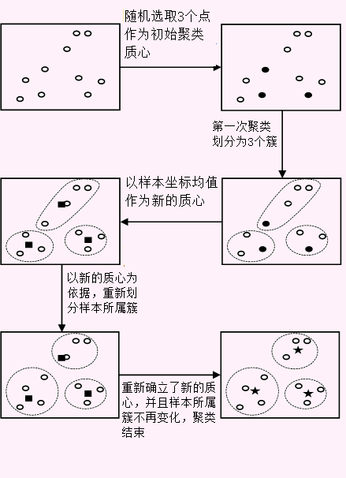

K-Means聚类算法
K-均值聚类算法（k-means clustering algorithm）作为基于距离的聚类算法，其算法过程如下：- 随机选取K个样本对象作为初始的聚类质心（中心点）。
- 计算各样本与每个中心点的距离，并将样本划分到距离最近的质心所在簇。
- 样本划分完成后，计算每簇样本坐标的均值，并以此为新的质心。
- 重新计算各样本与每个质心的距离，若存在样本所属簇发生变化则转第2步，否则转第5步。
- 当所有样本所属簇不再发生变化时停止并输出聚类结果。
- 以下是以10个点聚类为3类的K-均值聚类算法过程，其中实心符号表示聚类中心点:
